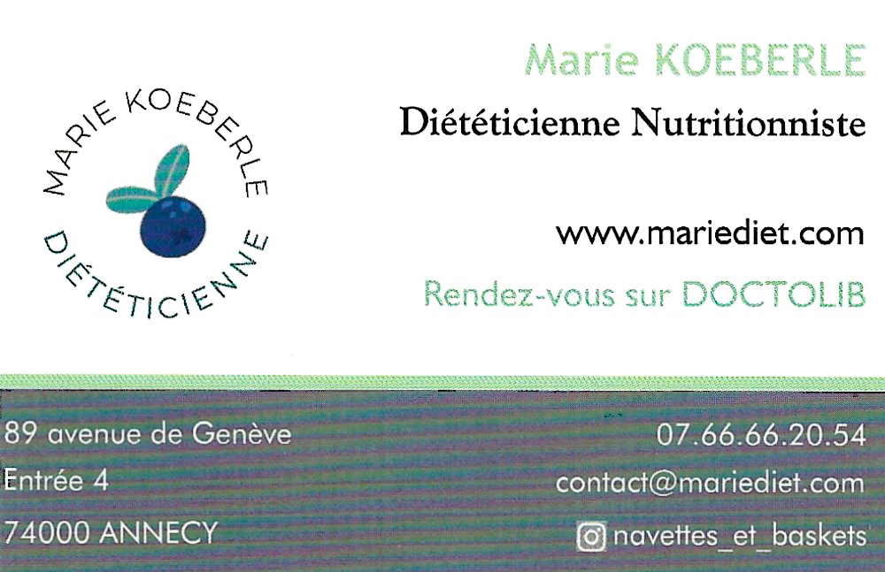

Marie Koeberle
Diététicienne Spécialisée dans l'alimentation du sportif d'endurance
Mes domaines de compétence
Mon rôle est de vous aider à améliorer votre santé grâce à une alimentation équilibrée. J'accompagne toutes les personnes souhaitant un rééquilibrage alimentaire, visant à la perte de poids ou à l'amélioration de votre santé et qualité de vie, sans régime restrictif.
Amatrice de trail, mes formations en nutrition auprès de la Clinique du Coureur et le DU Santé, Nutrition et Activités Physiques de Montagne me permettent de vous guider au mieux dans votre recherche de bien-être ou de performance.
Diplômes
- Diplôme Universitaire Santé, nutrition, activités physiques et montagne – Université Savoie Mont Blanc
- Nutrition Sportive : De la performance à la désadaptation – La Clinique du Coureur
- Licence Professionnelle Alimentation Santé : Nutrition du bien portant – IUT Lyon 1
- B.T.S. Diététique – Lycée Jean Rostand Strasbourg
Mon approche diététique
Elle consiste en un accompagnement personnalisé pour vous apprendre les bases de l'équilibre alimentaire. Le premier rendez-vous me permet de découvrir votre rythme de vie, vos objectifs et vos contraintes. Au fur et à mesure des suivis, je vous donne les clés de votre rééquilibrage alimentaire, seule méthode efficace pour une perte de poids sur la durée.
Je vous aide à faire les bons choix alimentaires, pour vous, votre santé et notre planète, tout en gardant le plaisir dans l'assiette.
Vous êtes amateur de sport d'endurance ? Votre alimentation doit couvrir vos besoins physiologiques, votre charge d'entraînement et permettre d'optimiser votre performance et votre récupération.
Mon rôle est de vous aider à adopter la meilleure stratégie nutritionnelle avant, pendant et après votre effort afin d'assurer une glycémie stable, un confort digestif et de limiter la dégradation musculaire.
Pour en savoir plus : www.mariediet.com

Consultations Marie Koeberle
Mes tarifs
Un suivi diététique demande un engagement sur la durée, le temps d'adopter vos nouvelles habitudes alimentaires et d'obtenir des résultats sur le long terme.
Je vous propose les forfaits d'accompagnement suivants :
- Forfait 6 mois – 7 séances 440 €
- Forfait 1 an – 10 séances 580 €
- Séance seule (hors forfait) 65 €
Durée des consultations : 45 minutes à 1 heure
Mes horaires
Du lundi au jeudi : 9h à 19h